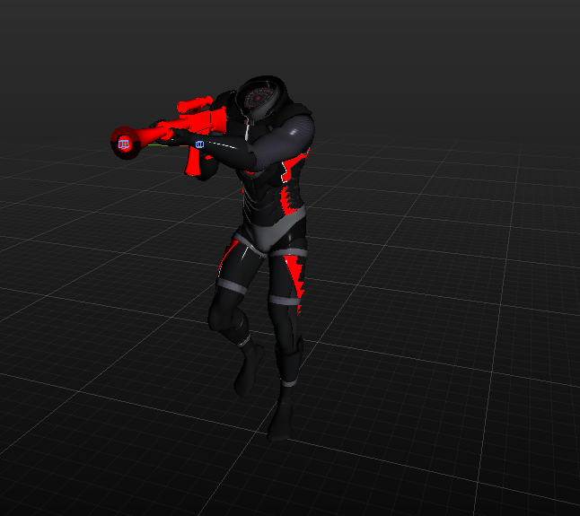
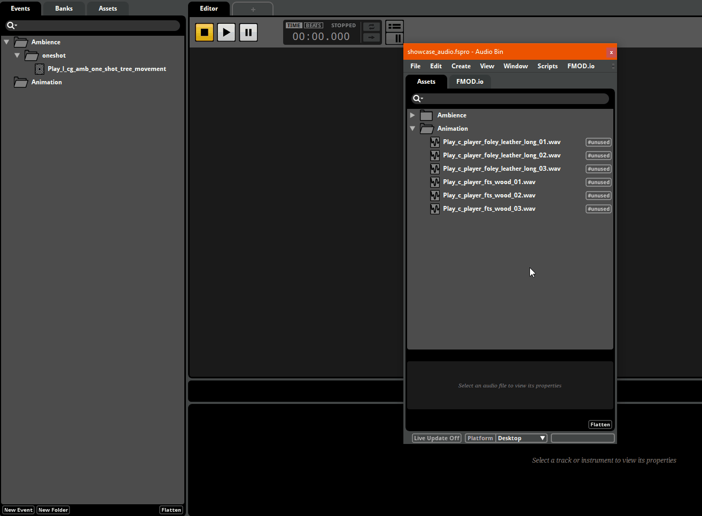
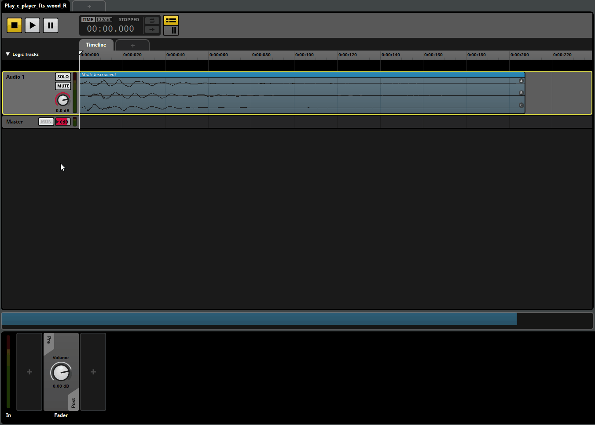
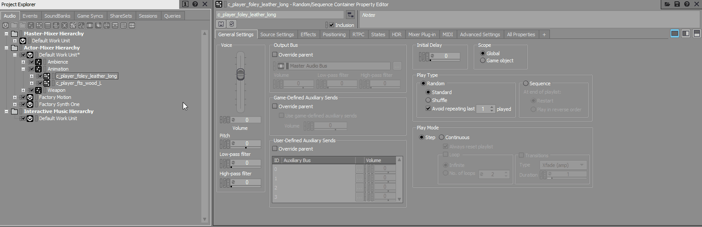
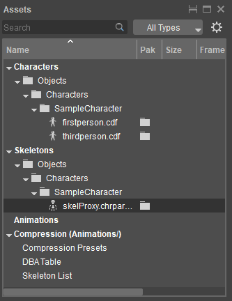
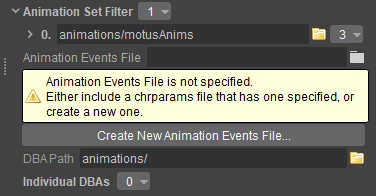
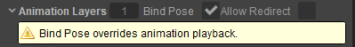
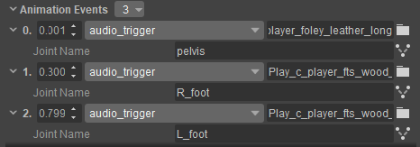
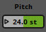
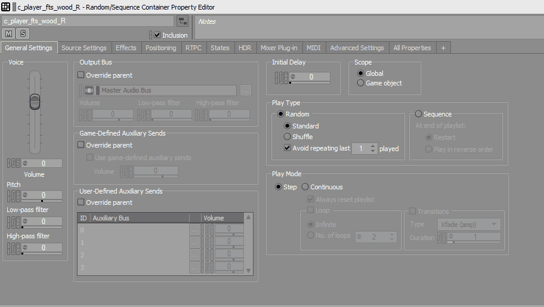

Overview
After adding sounds of gunfire and ambience to our Chinese garden level in the previous chapter, we now move towards adding sounds of footsteps and foley to the first-person player character.
Take a moment to listen to the audio files located in the chapter_02 folder of your chosen middleware implementation, located within the Audio Showcase assets' installation directory. The files c_player_fts_wood_01 - 03 (or Play_c_player_fts_wood_L/R, if using SDLMixer) are sounds for footsteps, while c_player_foley_leather_long_01 - 03 (or Play_c_leather_long, if using SDL Mixer) can be used as foley for the player character's leather outfit.

Player Character
In this chapter, these audio files will be added as sounds and foley to the player character's footsteps via your choice of middleware implementation and the Character Tool.
FMOD Video Tutorial
The FMOD workflow of this chapter is also covered in the following video:
Creating Triggers for Footsteps and Foley
FMOD Studio
Creating Events
Three events need to be created and added to our first-person character:
- One 2D multi-instrument for foley sounds,
- One 3D multi-instrument for the left footstep,
- One 3D multi-instrument for the right footstep.
To do this, as in Chapter 01, the audio files need to first be added to FMOD's Audio Bin.
- Create a new folder called Animation in the Audio Bin.
- Drag and drop the six audio files included in the _Audio_Assets/FMod Studio/chapter_02/ folder of the Audio Showcase assets' installation directory, into the Animation folder of the Audio Bin.
- Drag the c_player_foley_leather_long_01.wav, c_player_foley_leather_long_02.wav and c_player_foley_leather_long_03.wav files from the Audio Bin, into the Events tab of your FMOD project to create a 2D instrument with one multi-instrument. This Event corresponds to our foley, so let's name it c_player_foley_leather.
- Then, drag the c_player_fts_wood_01, c_player_fts_wood_02 and c_player_fts_wood_03 audio files from the Audio Bin into the Events tab of your FMOD project to create a 3D instrument with one multi-instrument for the left footstep. We'll call it c_player_fts_L.
- Similarly, create another 3D instrument with one multi-instrument using the same files for the right footstep. Call it c_player_fts_R as in the GIF below.

Import Animation
Positioning Sounds
While the foley sound in this tutorial plays in the center of the stereo panorama, it's more appropriate to hear the c_player_fts_L event on the left and the c_player_fts_R event on the right, since they correspond to the left and right footsteps respectively.
To position the sounds of these two Events:
- Click on either the Play_c_player_fts_L and Play_c_player_fts_R Event in FMOD, and then look for the Spatializer plugin at the bottom of the FMOD project window.
Inside the Spatializer, click the
button and turn the Mix knob in the Pan Override section all the way to 100%. When the Mix knob is set to 100%, FMOD only takes the sound positioning defined in the Pan Override section into account; the position set by the Game Engine is ignored.
- Next, position the small white dot inside the black circle in the Pan Override section to define the playback position of the footstep sound. Position the c_player_fts_L Event to play on the left, and the c_player_fts_R Event to play on the right.

Spatialzier
Building Soundbanks
The last thing that needs to be done is to create a new Soundbank that will contain the metadata relevant to the Play_c_player_foley_leather, Play_c_player_fts_L and Play_c_player_fts_R Events.
- Create a new Soundbank called Animation in the Banks tab of your FMOD project.
- Drag the Play_c_player_foley_leather, Play_c_player_fts_L and Play_c_player_fts_R Events from the Events tab into the Animation folder of the Banks tab.
Once done, save your FMOD project and build all Soundbanks by pressing F7. If you now switch to the ACE, you'll find the new Events and the Animation Soundbank listed in the Middleware Data panel. Recall that in order to use Events and their Soundbanks within your CRYENGINE project, Events need to be connected to Triggers and Soundbanks to Preload Requests.
- Create a new Library in the Audio System Controls panel, and name it Animation.
- Drag and drop the c_player_foley_leather, c_player_fts_L and c_player_fts_R Events from the Middleware Data panel to the Animation folder on the Audio System Controls panel.
- Copy the Animation Soundbank from the Middleware Data panel to the Preloads Library of the Audio System Controls panel.
As always, remember to save and refresh the ACE before proceeding.
Wwise
Creating and Positioning Events
Three Events, for foley, left and right footsteps respectively, need to be created for our first person character.
- Begin by adding a new Actor-Mixer, named Animation, to your Wwise Actor_Mixer_Hierarchy, and a folder of the same name in the Event tab.
- Create two new Random Containers within this Actor Mixer. Name the first one c_player_foley_leather_long, which will contain our foley sounds, and the other c_player_fts_wood_L for the player's left footsteps.
- Import files c_player_foley_leather_long_01 - 03.wav from the _Audio_Assets/Wwise/chapter_02/ folder of your Audio Showcase Level assets directory, into the c_player_foley_leather_long_ Random Container. Similarly import files c_player_fts_wood_01-03.wav into the c_player_fts_wood_L Random Container.
Since we need only a generic 2D Container for foley, the c_player_foley_leather_long Random Container can use the same simple setup as the l_cg_amb_one_shot_tree_movement Container created in the previous chapter.
We'd like to hear the footsteps on both the right and left positions of the stereo however, which is why we'd like to set the c_player_fts_wood_L Container to 3D playback. Normally the sounds in a 3D Container would be positioned by the game engine; but since we'd like them to play at a specific position on the left/right foot, we'll position the sounds ourselves.
We do this by first selecting the c_player_fts_wood Random Container, and then the Positioning tab in the Property Editor on the right.
- Activate the Override parent checkbox.
- From the 3D Spatialization drop down, select the Position + Orientation menu item.
- Under the 3D Position, pick the Listener With Automation menu option. Click the Automation... button to open the 3D Automation Window.
- Click the New button within the 3D Automation Window to create a new positioning path for the c_player_fts_wood Container.
- This activates the grid display with a small dot at its center, that represents the position of the sound emitter. For the left footstep, position the dot a little to the left in the first quadrant as shown in the GIF below (x= -20, y=100).

Left footstep
Press the spacebar at any time to preview the outcome of your positioning. When satisfied, go ahead and rename the Random Container to c_player_fts_wood_L since it now corresponds to the sound of the left footstep. To create a similar Random Container for the right footstep, create a copy of the c_player_fts_wood_L Container in the Animation Actor-Mixer, then simply rename the copy to c_player_fts_wood_R and set its playback position to the right.
To make Events of the three Random Containers we've created in this section:
- Select the c_player_foley_leather_long, c_player_fts_wood_L and c_player_fts_wood_R Random Container, right-click one of them, and select the New Event (One Event per Object) → Play option from the menu.
- If you switch to the Events tab in the Project Explorer, you should see three new Events created for each of the three Containers. Move them into a folder called Animation.
Finally, create a new Soundbank called Animation and add the Animation Events folder to it as we did in Chapter 01.
Once done, save your Wwise project and generate Soundbanks by pressing the Generate All button. If you now switch to the ACE, you'll find the new Events and the Animation Soundbank listed in the Middleware Data panel. Recall that in order to use Events and their Soundbanks within your CRYENGINE project, Events need to be connected to Triggers and Soundbanks to Preload Requests.
- Create a new Library in the Audio System Controls panel, and name it Animation.
- Drag and drop the c_player_foley_leather, c_player_fts_L and c_player_fts_R Events from the Middleware Data panel to the Animation folder on the Audio System Controls panel.
- Copy the Animation Soundbank from the Middleware Data panel to the Preloads Library of the Audio System Controls panel.
As always, remember to save and refresh the ACE before proceeding.
SDL Mixer
- Begin by creating a new folder called animation in the /Assets/Audio/SDL_Mixer/assets directory of your project, and copying the Play_c_player_foley_leather_long.ogg, Play_c_player_fts_wood_L.ogg and Play_c_player_fts_wood_R.ogg files into it.
- Create a new Library called Animation in the ACE's Audio System Controls panel; within it, create audio Triggers for each of the imported foley and footstep sounds.
- Deactivate the Enable Panning and Enable Attenuation properties for each Trigger, via the Properties panel.
Save and reload the audio engine before proceeding.
If using the SDL Mixer implementation, it is not possible to position the footstep audio assets via the middleware. Rather these assets, being stereo files, will have to be positioned before being imported into the Engine.
Adding Triggers to Animations via the Character Tool
The Triggers that were created for footsteps and foley have to now be associated with our character's movements.
For this, we use the Character Tool, which allows users to define and set up characters by importing assets authored in third party tools. A fully authored character usually consists of a 3D model, a skeleton, physical properties and an associated animation set.
Go ahead and open the Character Tool by clicking on the Tools → Animation → Character Tool option from the Sandbox's Main Menu.
For more information on the Character Tool, please refer to its user documentation.
On the left of the tool window is the Assets panel which provides an overview of all character-related assets. Navigate to the skeleton of the player character located under Skeletons/Objects/Characters/SampleCharacter/skelProxy.chrparams.

Skeletons
Creating an Animevents file
The first step is to create and associate an .animevents file to the skeleton of the character, which will contain information regarding the different triggers an animation must execute while running. These triggers can be audio Triggers, Switches, or even particle effects.

Create new Animation Events file
Click on the Create a new Animevents File... button under the Character Tool's Properties panel on the right, and create a new .animevents file under ../Objects/Characters/SampleCharacter/.
Let's name it player.Save the Skeletons/Objects/Characters/SampleCharacter/skelProxy.chrparams file by right-clicking it in the Assets panel, and selecting the Save option from the menu.Once created, open the player character's Character Definition File (.cdf) from the Assets panel under Characters/Objects/Characters/SampleCharacter/firstperson.cdf.
Double-click the CDF to choose it as the active character; this loads the character model in the middle of the tool window, and its properties on the right.If you're seeing proxies/physics helpers over the character model, deactivate them by clicking the little mannequin and cross
at the top of the screen. You can now open the animations for the first-person character, which are stored under the Animations panel situated on the left of the Character Tool.
The left panel of the Character Tool can be split, so that the bottom half is filtered to only show animations for the active Character Definition File.
To do so, click the
icon above the left panel to split it, then click the All Types dropdown to select which type files you'd like to see. Since we're looking to add triggers to the player's footsteps, it's the walk-cycle animation of the character we're interested in, stored as 2DONE-BSpace_MoveStrafeRIFLE in the bspace folder. Click it to play the animation.
If the walk-cycle animation fails to play on click, deactivate the Bind Pose toggle in the Scene Parameters column on the upper-right of the character tool.

Bind Pose
As the animation plays, the timeline at the bottom of the Character Tool displays its progress in seconds, frames or normalized units where the length of the animation is scaled to 1.0.
Creating Animation Events
You now need to create Animation Events for the character's left footstep, right footstep and foley each, associating the Play_c_player_fts_wood_L, Play_c_fts_wood_R and the Play_c_player_foley_leather audio triggers to them respectively.
Since Animation Events use normalized units for timestamps, it is recommended to set the animation timeline's units to 'normalized'.
- With the animation playing, double-click the animation timeline as soon as the character's right foot hits the floor, which is normally around the 0.35 mark (in normalized units). The created Animation Event will now be listed under the Animation Events panel at the bottom-right corner of the Character Tool window. Then, assign the Play_c_player_fts_wood_R trigger to this Animation Event by clicking the
icon next to it. - Similarly, create Animation Events for the left footstep trigger Play_c_player_fts_wood_L, and foley trigger Play_c_player_foley_leather_long, respectively. Feel free to use the timestamps shown in the image below.

Animation Events
For animations that play in third person, it makes more sense to attach triggers to specific bones of a character. To associate a trigger to a joint at a specific Animation Event, click the
This brings up a list of all joints used by the character. Select the most appropriate one by double clicking it.
Character Tool Best Practices
- Ensure that the footsteps have a steady rhythm by timing their Event Animations appropriately.
- When designing audio triggers, attempt to consolidate as much audio information into a single trigger so as to reduce the number of animation events. At the same time, your animation should have more than one trigger to be able to react to different scenarios.
- If you're unable to be accurate with the placement of your Animation Events/Trigger, it's always better for the trigger to be audible a few moments before the animation takes place, rather than the other way around.
Conclusion
You're now ready to test the character's footsteps. Make sure to save all changes made in the character tool by selecting the File → Save All option from the 
You might feel that the footsteps are quite repetitive, especially since only three assets have been used for both feet. Variations can be added by adding pitch randomization to the sounds on FMOD or Wwise.
FMOD
- Select one of the created footstep Events in your FMOD project, and then click on the blue Multi-instrument area in the center panel.
- On doing so, you should see a playlist of audio assets that make up the Event in the bottom panel, and a handle for pitch

- The effect of pitch can be made more pronounced by randomizing it. To randomize the pitch, right-click the Pitch handle and select the Add Modulation → Random option from the menu.
- This should create another Pitch knob to the right of the playlist; this can be used to set the range of randomization (such that a value of 3.00 st, for example, represents +3 semitones and -3 semitones, for a total variation of 6 semitones).
- Don't forget to randomize both footsteps.
Wwise
- Select either the c_player_fts_wood_L or c_player_fts_wood_R footstep Containers and switch to the Designer Layout (F5).
- In the General Settings tab of the Actor-Mixer property editor is a dial for Pitch, that lets users change the overall pitch of the selected Container. Although this is a static value, we'd like a different pitch every time the Container is triggered.
- Double-click the

- Don't forget to randomize both footsteps.

Randomizer
This concludes Chapter 02 of our level's audio design.
You may have noticed a campfire in the center of your Chinese garden level. The next chapter will have us adding audio effects to this campfire, before we finally move towards developing a dynamic ambience for the entire scene in Chapter 04.